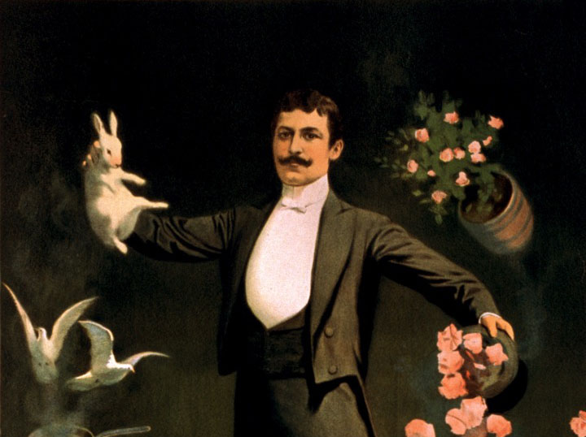
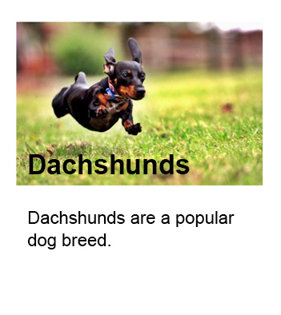
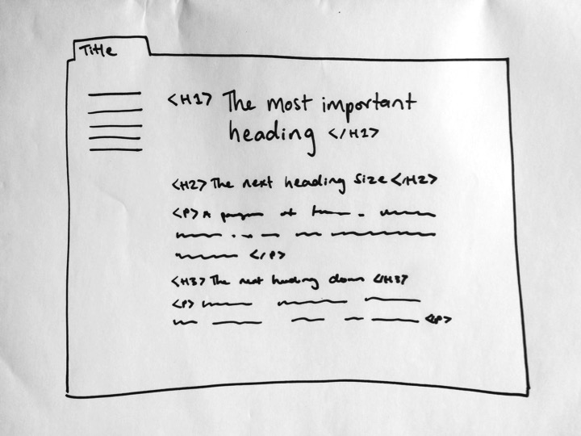

Content Accessibility
Katherine Barcham
Department of Internal Affairs
Who am I thinking about?
Disclaimer: I'm not a magician
Context
Link text
Writing good link text
Links should:
- be clear about where they will take the reader(!)
- look and be marked up consistently
- be descriptive
- use keywords
- make sense when removed from its context.
Better link text
Conference Centre
The conference will be held on two floors of the venue on Saturday.
View a map of the Conference Centre
Conference Programme
There are two streams of lectures with plenary sessions.
Accommodation
When seeing is an issue

Text alternatives for images
Anything you say with an image, also say with text.
Who it affects
- People who can't see images:
- vision disability
- bad internet connection
- old browser
- limited data
- Search engines (Google)
Decorative images
The benefits of owning a dog
 Image source
Image source
There are many benefits to owning a dog. They are fun, loyal companions.
Decorative images
 04 555 1212
04 555 1212
Phone: 04 555 1212
Meaningful images
Chippy the hero!
Image source
Chippy, a dachshund, saved the life of his owner after she had a fall.
Meaningful images
Text in images

This is a popular breed of dog.
…
Linked images
More examples!
What about complex images?
Long descriptions
- Still need brief alt text
- Also helps people with learning disabilities
- Text equivalent of essential information, in context
Examples
- Good: Graphic from DIA Annual Report
- Not as good: Chart from DIA Annual Report
What alt text is needed
Captions and transcripts

Videos need captions.
Videos and audio need descriptive text transcripts.
Who it affects
Captions are good for people:
- with a hearing impairment
- with a learning or language difficulty
- who forgot their headphones and are in a noisy place, or in a quiet place.
Example time
Who it affects
Full descriptive text transcripts are good for people:
- who can't see and hear the video
- who prefer to read than watch/listen
- who are preoccupied — like washing the dishes.
Also good for Google and other search engines.
What goes in a transcript?
Transcripts:
- don't have to be verbatim accounts of the audio track in a video
- need to include extra explanations or comments that may be helpful, like indications of laughter or an explosion.
Example for discussion
Example time
Transcript on separate page (IRD)
Barriers for everyone
Doing text right
Use headings to mark up structure!
Who it affects
- EVERYONE!
- But especially anyone:
- using assistive tech, e.g. screen reader or speech rec
- with a reading or learning difficulty
- trying to skim the page or find information quickly
- using custom style sheets or display preferences
- Google and other search engines.
Headings
Headings example
Real world examples
Resources
Web accessibility for content editors — quick reference guide